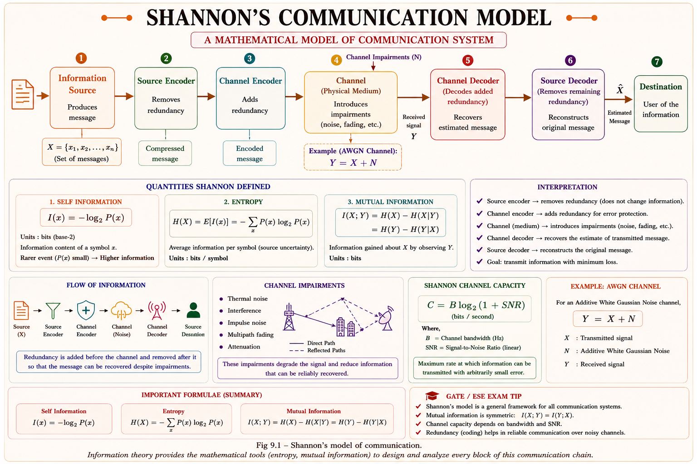
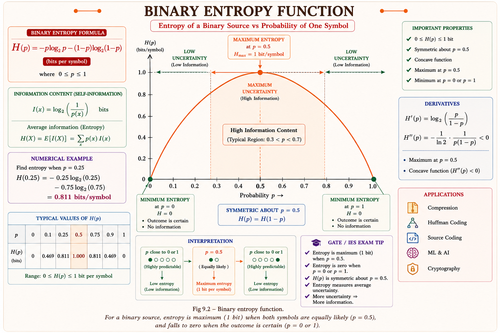
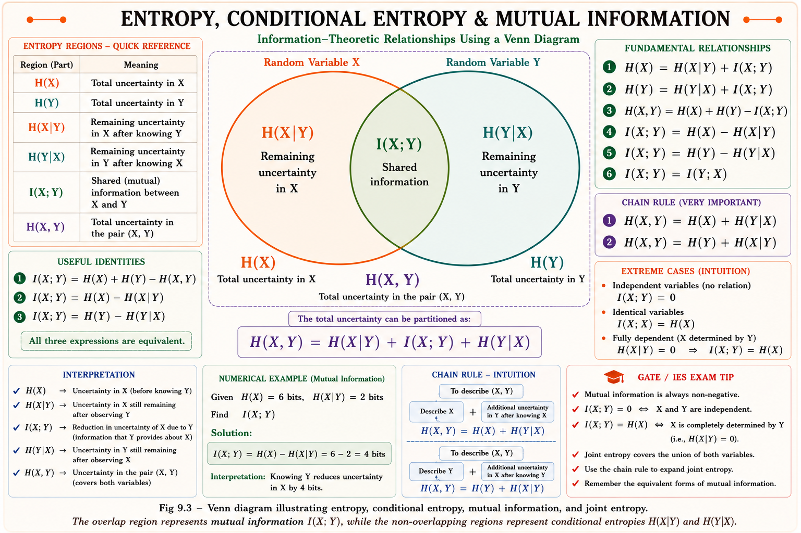

Self information, entropy, joint entropy, conditional entropy and mutual information — the mathematical backbone of source coding and channel coding. Full derivations, intuitive analogies and solved GATE/IES numericals.
Imagine a weather forecaster who says "It will be sunny in the Sahara desert tomorrow." You already expected this — the message carries almost no new information. Now imagine the same forecaster says "It will snow in the Sahara desert tomorrow." This is shocking news — it carries enormous information. Information theory is the branch of mathematics, pioneered by Claude E. Shannon in 1948, that quantifies exactly this idea: information is tied to uncertainty, not to the length of a message.
Every digital communication system — Wi-Fi, 4G/5G, satellite links, deep-space probes, even ZIP file compression — rests on two pillars built from information theory: source coding (remove redundancy, compress data) and channel coding (add controlled redundancy to fight noise). Both pillars are quantified using entropy.

Self information measures how surprising — or how informative — a single outcome is. An event that is almost certain to occur carries little self information; a rare event carries a lot. Shannon formalised this intuition using a logarithm so that information from independent events simply adds up.
Think of probability as "expectedness." If \( P(x) \) = 1 (certain), the message tells you nothing new — information should be zero. If \( P(x) \) \to 0 (extremely rare), the message is maximally surprising — information should tend to infinity. The function -log \( P(x) \) satisfies exactly these two boundary conditions, and the logarithm ensures that information from two independent messages adds rather than multiplies.
P(Heads) = 0.5 for a fair coin.
$$I(\text{Heads}) = -\log_2(0.5) = \log_2(2) = 1 \text{ bit}$$So one toss of a fair coin conveys exactly 1 bit of information — matching our everyday usage of the word "bit."
Note the pattern: P = 1/2ⁿ always gives I = n bits exactly. GATE frequently uses powers of 2 (1/2, 1/4, 1/8, 1/16) to keep the arithmetic clean.
Self information tells you the surprise of a single outcome. But a source emits many symbols over time — we need the average information per symbol. This average is called entropy, denoted \( H(X) \), borrowed deliberately from thermodynamics because both quantify "disorder" or "uncertainty" in a system.
Entropy is the expected value (statistical average) of self information: \(H(X) = E[I(x)]\). It represents the minimum average number of bits required to represent one symbol from the source without loss — this is exactly the bound that source coding theorem (Shannon's first theorem) uses to define optimal compression.

Entropy measures uncertainty. When one symbol is far more likely than the other (\( p \) close to 0 or 1), you can predict the outcome with confidence, so uncertainty — and hence entropy — is low. When both symbols are equally likely, you have the maximum possible uncertainty about which symbol will appear next, so entropy peaks. This single curve is the most frequently tested concept in GATE Information Theory.
Students often think entropy depends on the values of the symbols (e.g., the actual voltage levels). It does not — entropy depends purely on the probability distribution of the symbols, not on what the symbols physically represent.
For a source with n equally likely symbols, entropy reaches a clean, easily testable maximum value. This bound is one of the most repeated GATE results.
| Property | Statement | Physical Reason |
|---|---|---|
| Non-negativity | \( H(X) \) \ge 0 | Probabilities \le 1, so -log₂P(x) \ge 0 always |
| Zero entropy | \( H(X) \) = 0 | Only when outcome is certain (one symbol has P = 1) |
| Maximum entropy | \( H(X) \) = log₂n | Only when all n symbols are equiprobable — max uncertainty |
| Upper bound rule | 0 \le \( H(X) \) \le log₂n | Entropy is always sandwiched between certainty and total randomness |
n = 4, each P(xᵢ) = 1/4.
$$H(X) = \log_2 4 = 2 \text{ bits/symbol}$$This matches intuition: 4 equally likely symbols can be encoded exactly using 2-bit binary codewords (00, 01, 10, 11) with zero redundancy — entropy gives the theoretical minimum code length.
\( H(X) \) = 1.75 bits is less than log₂4 = 2 bits. This confirms the property: unequal probabilities always reduce entropy below the equiprobable maximum.
So far we considered one source. Real communication systems involve two related random variables — for example, the transmitted symbol X and the received symbol Y (which may differ due to channel noise). Joint entropy \( H(X,Y) \) measures the total average uncertainty of the pair (X,Y) taken together.
Imagine you must guess both today's weather (X) and tomorrow's weather (Y) together. Joint entropy is the total uncertainty of guessing the pair correctly — not each one separately, but the combined outcome (X=x, Y=y).
Conditional entropy \( H(Y|X) \) measures the remaining average uncertainty about Y once X is already known. In a communication channel, \( H(Y|X) \) represents the noise added by the channel — uncertainty about the received symbol given that we know what was transmitted.
If the channel were perfectly noiseless, knowing X tells you Y exactly, so \( H(Y|X) \) = 0. As channel noise increases, even knowing X leaves growing uncertainty about Y, so \( H(Y|X) \) increases. This is why \( H(Y|X) \) is also called the noise entropy of a channel.

Mutual information \( I(X;Y) \) quantifies how much knowing one random variable reduces uncertainty about the other. It is the single most important quantity for defining channel capacity — the maximum reliable data rate of a communication channel.
Shannon defined channel capacity as \( C = \max I(X;Y) \), maximised over all possible input probability distributions \( P(x) \). This single quantity tells communication engineers the absolute upper limit of error-free data rate over a given noisy channel — the foundation of the Shannon-Hartley theorem covered in the next chapter.
For a BSC, \( H(Y|X) \) equals the binary entropy of the crossover probability \( p \):
$$H(Y|X) = H(p) = -p\log_2 p - (1-p)\log_2(1-p)$$ $$H(0.1) = -0.1\log_2(0.1) - 0.9\log_2(0.9) \approx 0.332 + 0.137 = 0.469 \text{ bits}$$Since inputs are equiprobable, the output Y is also equiprobable (P(Y=0)=P(Y=1)=0.5), so \( H(Y) \) = 1 bit.
$$I(X;Y) = H(Y) - H(Y|X) = 1 - 0.469 = 0.531 \text{ bits}$$This 0.531 bits/symbol is exactly the channel capacity of this BSC — the GATE-favourite result \(C = 1 - H(p)\) for a symmetric binary channel.
Information rate R = rs × \( H(X) \), where rs is the symbol rate:
$$R = 1000 \times 3 = 3000 \text{ bits/second}$$Since X and Y are independent, joint entropy is simply additive:
$$H(X,Y) = H(X) + H(Y) = 2 + 1.5 = 3.5 \text{ bits}$$And mutual information must be zero for independent variables (no shared information):
$$I(X;Y) = H(X) + H(Y) - H(X,Y) = 2 + 1.5 - 3.5 = 0 \text{ bits}$$This topic is rated 🟢 High Probability in GATE EE/EC. Entropy of equiprobable sources and binary entropy function are almost guaranteed to appear in some form every year.
Solution: H = 0.5(1) + 0.25(2) + 0.125(3) + 0.125(3) = 0.5+0.5+0.375+0.375 = 1.75 bits/symbol. (Same structure as Example 9.4 above — a recurring GATE pattern.)
Solution: C = 1 − H(\( p \)). H(\( p \)) is minimum (= 0) at \( p \) = 0 or \( p \) = 1, so capacity is maximum (= 1 bit) there. At \( p \) = 0.5, H(\( p \)) = 1 (max), so C = 0 — the channel is useless (output independent of input).
Solution: Base-2 log \to bits, base-e (natural log) \to nats, base-10 log \to Hartleys (or decits/dits). Conversion: 1 nat = log₂e ≈ 1.443 bits.
Whenever a GATE probability is of the form 1/2ⁿ, the self information is exactly n bits — no calculator needed. For entropy of mixed powers-of-two distributions, simply compute Σ P(xᵢ)·nᵢ where nᵢ = log₂(1/P(xᵢ)). This mental shortcut saves significant time in the exam.
Have a question on entropy, mutual information, or channel capacity? Type below or pick a suggestion.
\( I(x) \) = -log₂P(x), bits. Certain event \to \( I=0 \). Rare event \to I\to\infty. \( P=1/2^n \) gives \( I=n \) bits exactly.
\( H(X) \) = E[I(x)] = -ΣP(xᵢ)log₂P(xᵢ). Average info/symbol. Max = log₂n at equiprobable symbols.
\( H(X,Y) \) = -ΣΣP(x,y)log₂P(x,y). \( H(X,Y) \) \le H(X)+H(Y), equality iff X,Y independent.
\( H(Y|X) \) = noise/leftover uncertainty. Chain rule: \( H(X,Y) = H(X) + H(Y|X) = H(Y) + H(X|Y) \).
\( I(X;Y) = H(X) - H(X|Y) = H(Y) - H(Y|X) \). Symmetric, \ge0. Channel capacity \( C = \max I(X;Y) \).
Binary entropy function H(\( p \)), powers-of-2 probability shortcuts, BSC capacity C=1-H(\( p \)).
All technical content is derived from the following standard textbooks and learning resources. All explanations, derivations, diagrams and examples are original to Aarova AI.